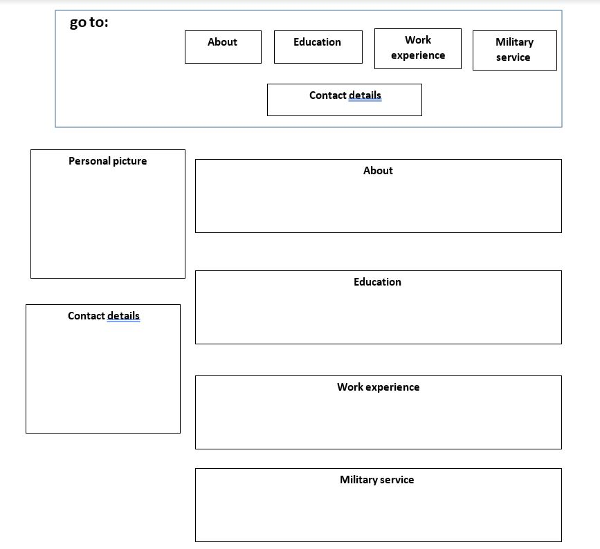

1. UX questions:
- The target audience of the website is employers and human resources people.
- The main purpose of the website is to display my resume.
- The secondary purpose of the website is to built easy to change resume that can be good for any job with small changes.
- I want the user will be able to scroll through all of the site and see the relevant information in fast way.
- The success index is the number of job interview that i will get after sending the cv to hr.
- The content of the site is information about my life experience and abilities.
2. UI questions:
- sketch

- Color scheme

- The font will be " Poppins"
- Image: passport picture